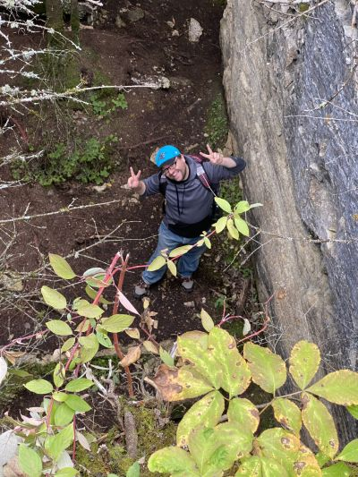
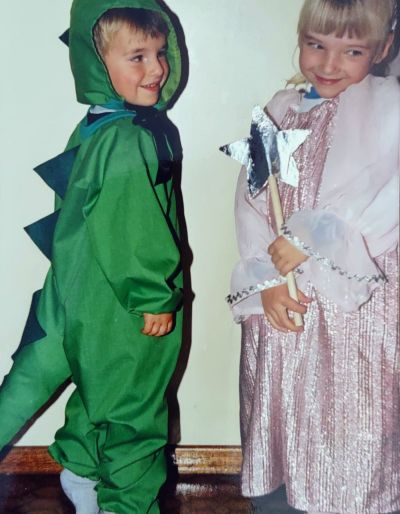
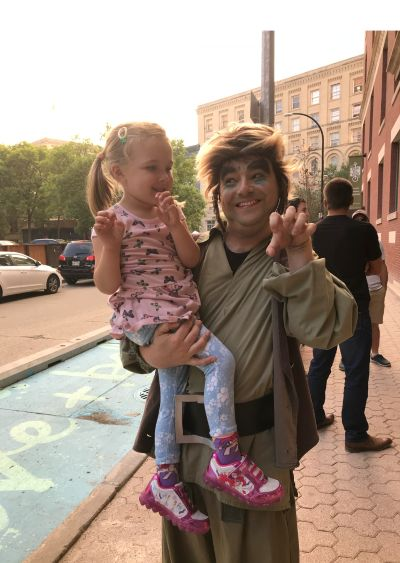
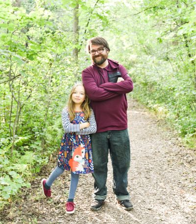
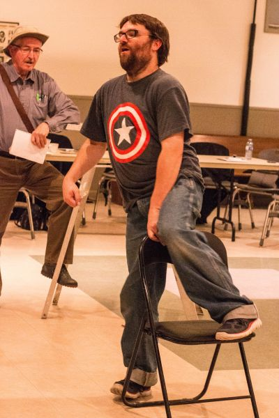

I had many adventures with Dan both in and out of the theatre. One of my favourites is when we took a road trip out to Pine Docks to film in the caves. It was one of many locations we ventured to in the making on Paper Bag Princess Trailer, based on Dan's favourite children's story by Robert Munsch.
- Steph Blanchette
Paper Bag Princess Teaser Trailer
See Full Trailer Here

Daniel in Dino costume

Daniel and his biggest fan, his niece Madelyn. This one of the first productions Madelyn was able to attend and lasted 30 seconds into Daniel's appearance before she got too scared and needed to leave. However, she was overjoyed to meet the ogre in person after the show

Madelyn McCamis and her uncle Daniel Gilmour posing up a storm during a family photo shoot. Madelyn and Daniel were always making each other laugh and enjoy life to the fullest. Madelyn wants to become a writer and actor like her uncle.
Rehearsing for Snow White

Chair One - Dan Zero
In rehearsal for Wpg Mennonite Theatre's 2019 production of "Tempest Tost", Dan was supposed to leap, or vault, over this chair - carefree, without a worry in the world. Unfortunately, he miscalculated heights and distances, almost doing himself irreversible damage! Being a true pro, he disengaged himself from the offensive chair, grimaced, and carried on without any more errors.
- Bernard